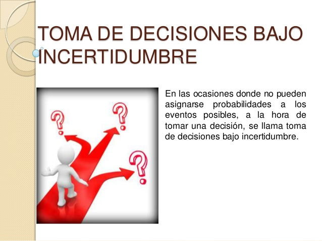

ANÁLISIS DE DECISIONES BAJO INCERTIDUMBRE
Es aquella donde se posee información deficiente para tomar la decisión, no se tienen ningún control sobre la situación, no se conoce como puede variar o la interacción de las variables del problema, se pueden plantear diferentes alternativas de solución, pero no se le puede asignar probabilidad a los resultados que arrojen y se presenta cuando no puede predecirse fácilmente el futuro sobre la base de experiencias pasadas. Existen dos tipos de toma de decisiones bajo incertidumbre:
-
Estructuradas: No se sabe que puede pasar entre diferentes alternativas, pero sí se conoce que puede ocurrir entre varias posibilidades.
-
No estructuradas: No se sabe que puede ocurrir ni las probabilidades para las posibles soluciones, es decir no se tienen ni idea de que pueda pasar.
